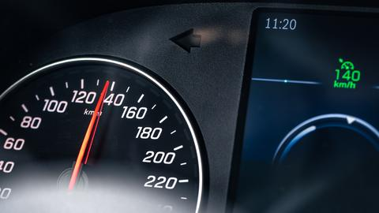

Chęciny
Awaryjne otwieranie samochodów i domów, kluczyki – Chęciny i okolice
Awaryjne otwieranie samochodów, mieszkań i domów oraz dorabianie kluczyków samochodowych w Chęcinach i wsiach gminy. Dojeżdżamy z Kielc drogą nr 762 lub trasą S7 – do mieszkańców, do turystów zwiedzających zamek i jaskinię oraz do kierowców w podróży.
Awaryjne otwieranie w Chęcinach – którędy jedziemy
Miasto leży na południowy zachód od Kielc. Wyjeżdżamy z ul. Chodkiewicza 45A i jedziemy jedną z dwóch tras: drogą wojewódzką nr 762 przez Zagrody albo ekspresową S7 do węzła Chęciny. Wybieramy tę, która w danej chwili jest szybsza – przy robotach drogowych, wypadku czy wakacyjnym ruchu bywa różnie.
W granicach miasta droga 762 omija stare miasto od północy, dlatego przy zgłoszeniu z okolic rynku albo spod zamku podaj nazwę ulicy lub parkingu. Czas dojazdu zależy od pory i od tego, gdzie dokładnie jesteś – w mieście, w Tokarni czy w jednej z mniejszych wsi. Podajemy go w rozmowie telefonicznej, razem z ceną, zanim zaczniemy pracę.
Turyści: zamek, Jaskinia Raj, Rzepka i Tokarnia
Chęciny przyciągają wycieczki przez cały rok. Nad miastem góruje Zamek Królewski, w Dobrzączce – z wjazdem od drogi nr 762 – jest Jaskinia Raj, a na zboczu Rzepki działa Europejskie Centrum Edukacji Geologicznej. Kilka kilometrów dalej, przy S7, leży Park Etnograficzny w Tokarni, a w Podzamczu Chęcińskim – Centrum Nauki Leonardo da Vinci. Przy rodzinnym zwiedzaniu łatwo o zamieszanie: każdy myśli, że kluczyk wziął ktoś inny, dzieci wysiadają, a samochód po chwili sam rygluje drzwi. Zdarza się też, że w chłodny dzień słabnie bateria w kluczyku keyless i auto przestaje go wykrywać (zobacz: kluczyk keyless nie działa).
Nie podważaj szyby ani uszczelki – zadzwoń i powiedz, przy której atrakcji i na którym parkingu stoisz oraz jakiej marki i jakiego koloru jest auto. Otwieramy je najczęściej profesjonalnym dekoderem do zamków, a gdy to nie wchodzi w grę – metodą mechaniczną; drzwi i szyby pozostają przy tym nienaruszone. Niech ktoś z Was czeka przy samochodzie; jeśli dowód rejestracyjny leży w kabinie, pokażesz go zaraz po otwarciu. Resztę wskazówek zebraliśmy w poradniku kluczyki zatrzaśnięte w aucie.
Kierowcy na trasie S7
S7 omija Chęciny i prowadzi dalej w stronę Jędrzejowa i Krakowa, a w przeciwnym kierunku – na Kielce i Warszawę. Jeśli kluczyki zostały w zamkniętym aucie na MOP-ie lub stacji przy ekspresówce, przekaż nam kierunek jazdy (na Kraków czy na Warszawę) oraz nazwę stacji albo ostatni mijany węzeł. Dzięki temu od razu wjedziemy na właściwą jezdnię, zamiast zawracać na kolejnym węźle.
Jeśli auto stoi na poboczu ekspresówki, nie czekaj przy drzwiach od strony jezdni – przejdź za barierę ochronną, jeśli jest, a gdy sytuacja robi się niebezpieczna, dzwoń na 112. Kiedy kłopotem nie jest zamek, lecz kluczyk, którego samochód nie rozpoznaje, albo zgubione kluczyki, opisz to dokładnie przy zgłoszeniu – zabierzemy sprzęt do kodowania kluczyków.
Mieszkańcy Chęcin i wsi gminy
W mieście – od zabudowy wokół rynku (Plac 2 Czerwca) po domy jednorodzinne na obrzeżach – otwieramy zatrzaśnięte drzwi mieszkań i domów, a także garaże i furtki. Jeździmy też do wsi gminy, m.in. do Bolmina, Korzecka, Miedzianki, Polichna, Radkowic, Siedlec, Starochęcin, Tokarni, Wolicy, Skib, Mostów, Ostrowa i Łukowej.
Przed otwarciem drzwi potrzebujemy Twojego dowodu osobistego oraz dokumentu, który pokazuje, że masz prawo do mieszkania lub domu – aktu notarialnego albo umowy najmu. Jeśli wszystkie dokumenty zostały w środku, powiedz o tym od razu przez telefon – ustalimy, jak potwierdzić Twoje uprawnienia. Przy zgłoszeniu ze wsi przyda się informacja, od której drogi najłatwiej podjechać pod posesję. O samej usłudze więcej na stronie otwieranie mieszkań i domów.
Masz w domu tylko jeden kluczyk do auta? Zapasowy dorobimy i zakodujemy przy Twoim samochodzie, w umówionym terminie – zobacz dorabianie i kodowanie kluczyków. Gdy nie został żaden, pomoże usługa utrata wszystkich kluczyków.
Auto z wypożyczalni lub służbowe – zanim zadzwonisz
Wśród kierowców zatrzymujących się przy S7 i turystów odwiedzających okolicę nie brakuje osób jadących autem służbowym, leasingowym albo z wypożyczalni. Gdy takie auto zamknie się z kluczykiem w środku albo kluczyk zginie, zacznij od dwóch telefonów:
- do wypożyczalni, pracodawcy lub leasingodawcy – sprawdź w umowie, czy assistance obejmuje otwarcie auta i czy właściciel nie ma własnej procedury, np. zapasowego kluczyka w biurze;
- do nas – gdy assistance nie pomoże albo trzeba działać od razu.
Przy samochodzie, który nie jest Twoją własnością, oprócz dowodu osobistego przyda się umowa najmu lub upoważnienie od firmy – bez potwierdzenia, że korzystasz z auta legalnie, nie otworzymy go. Nowego kluczyka do cudzego auta nie zamawiaj na własną rękę: o jego wykonaniu decyduje właściciel pojazdu. Jakie dokumenty sprawdzają się przy aucie firmowym lub leasingowym, wyjaśniamy w poradniku o przygotowaniu się do wizyty ślusarza.
Usługi w miejscowości Chęciny

Otwieranie samochodów
Kluczyki zamknięte w kabinie lub bagażniku, rozładowany akumulator, zamek, który nie reaguje – otwieramy auto całą dobę.
Szczegóły
Dorabianie i kodowanie kluczy
Zapasowy kluczyk z chipem, pilot, keyless – dorabiamy i kodujemy, a zgubione kluczyki usuwamy z pamięci auta.
Szczegóły
Utrata wszystkich kluczyków
Nie został żaden kluczyk? Otwieramy auto, przygotowujemy i kodujemy nowy, a zgubiony usuwamy z pamięci.
SzczegółyOtwieranie mieszkań i domów
Zatrzaśnięte drzwi, klucz w zamku od środka, zgubione klucze – otwieramy mieszkania, domy, garaże i bramy.
Szczegóły
Sterowniki i immobilizery
Auto nie odpala lub nie widzi kluczyka – naprawa i wymiana sterownika silnika, prace przy immobilizerze.
Szczegóły
Filtry DPF
Kontrolka DPF, spadek mocy, tryb awaryjny – diagnostyka, wymuszona regeneracja i czyszczenie, bez wycinania filtrów.
Szczegóły
Ford i Mazda – kodowanie
Język polski w aucie, tylne światło przeciwmgłowe, aktywacja i wyłączanie funkcji w Fordzie i Maździe.
SzczegółyPytania i odpowiedzi
Czy dojedziecie na parking pod zamkiem albo przy Jaskini Raj?
Kluczyki zostały w aucie na stacji przy S7. Co powiedzieć przez telefon?
Czy dojeżdżacie do wsi gminy Chęciny, np. do Bolmina czy Tokarni?
Auto z wypożyczalni zamknęło się z kluczykiem w środku. Otworzycie je?
Inne miejscowości
Potrzebujesz pomocy teraz?
Zadzwoń – powiemy, ile to potrwa i ile będzie kosztować, zanim wyjedziemy.